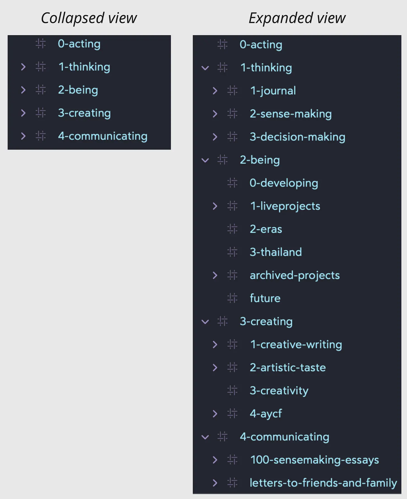
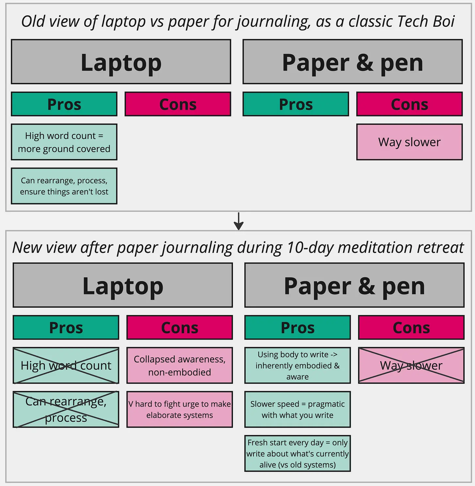

Quick thing on the generalisability of these reflections: I have discovered that paper journaling fixes some key failure modes of mine, but it’s very likely that you don’t have these failure modes, in which case this won’t resonate, and that’s ok!
For all of my adult life I’ve been an unrepentant tech nerd in all the typical ways: keyboard shortcuts, touch-typing, Macbook full of little niche programs to make things marginally more convenient, fell down the (toxic, at least for me) rabbit-hole of productivity Youtube, etc etc.
So naturally when a productivity Youtuber recommended Morning Pages (from “The Artist’s Way”), and mentioned that the author highly recommended longhand, I scoffed and figured that this person was just a dinosaur who started writing pre-keyboards1, and I’d save a bunch of time and have way more insights if I could blast away with my touch-typing and stay well clear of a hand-cramping Bic pen. It’s probably just due to hunt-and-peck typing that these people think pens are still relevant, I would have thought smugly, whilst holding my mechanical keyboard like a baby and blowing kisses at my Macbook.
Thanks for reading Alex’s Substack! Subscribe for free to receive new posts and support my work.
So I started journaling on a laptop, and things seemed like they were going well. I used a clean journaling app (Bear), and was proud of myself for keeping it simple - avoiding my previous “Second Brain” (Roam Research, Obsidian et al.) era mistakes of making overcomplicated systems, spending ages browsing the plugin and theme stores, laboriously connecting notes together, etc.
However as I journaled in Bear, I started to surface things that felt very important to keep front-of mind each day. Like I discovered growth areas that I wanted to keep alive, things that if I forgot to keep on top of would represent huge tragedies. “Holy shit, these things are important, I need to make some changes and not drop this stuff!”.
So, naturally, I started to create little extra daily journals on specific topics, so I would keep reflecting on these things and would be bound to see incremental improvements. And then I created other sections too, like a section for writing lyrics, a section for tracking live projects & new ways of being, etc.
Needless to say, it all felt a little overwhelming, but also important.
Here’s what my Bear sidebar turned into - I’d click through most of these sections every day, opening each note and adding little updates and stuff, trying to keep the ball rolling on all the things I was discovering that I cared about2.

Uhhh yeah this is becoming a little unwieldy…
Then I went to a 10 day vipassana (Goenke-style) retreat, and smuggled in a paper journal, and discovered that paper journaling actually has a few huge benefits that were also very in line with stuff I had been thinking about for a while, and what I assumed were cons-with-no-upside are actually very much worth the hand-cramping, and in fact have strong benefits of their own.
And now I present to you - my diagram!

So as the diagram shows, I thought “high word count” = good, and “can rearrange notes, make new systems, make summary pages etc” = good. I now think both of these things are actually curses hiding as blessings.
Awareness & the body
When I journal with a keyboard, because I can touch type, I get into a nice flow state and can write a whole lot. However, this flow state means that my awareness pretty much collapses onto my laptop3, like I just become my laptop and the words that are flowing out of me at a rapid pace. This felt normal, like nothing was missing, until I started paper journaling in earnest at the retreat.
With paper journaling, it’s much harder for you to lose awareness of your body, because you’re viscerally aware that you’re getting the words on the page by moving your hand/arm in a kind of uncomfortable way, there’s a bit of cramping, you’re having to keep an eye out to make sure your handwriting doesn’t slip too much, etc.
The speed is also a big factor here - you’re not writing so fast that you can get totally absorbed by the words, you’re writing slow enough that there’s some tedium involved and you’re aware of the fact that the words are more deliberate and planned. Like “hm I could write about that thing but my hand hurts and it doesn’t feel that important” vs “I’m typing real quick so I’ll just stream-of-conscious about every little thing despite relevance”.
It turns out that staying in touch with your body is kind of huge. Something that seems to be a really common thread in tpot (“this part of twitter”, a loose twitter community full of people interested in things like inner work), something that unifies a bunch of different inner work techniques like Internal Family Systems therapy, Focusing, Breathwork, Somatic Resonance, Meditation etc etc, is that the body is like… super frickin important, in a way that I found really surprising to discover as a totally STEM-/computer-pilled nerd, and someone who had only partaken in Humanistic therapy that felt very “let’s talk about your problems on an intellectual level and try and reason through them”.
It feels to me now like we think with our brain but we feel and know with our body (maybe not a revelation to anyone but me, but this has been a big update for me personally!). So if we’re journaling with a tool that gets us very much in brain-mode (touch typing at a speed where your awareness total collapses onto the screen) then we totally lose our bodily sense of what we’re writing about, our intuition of what feels important and true, etc. So we fall into the trap of writing a bunch of stuff but in a kind of detached way, rather than slowing down and noticing what feels really alive at this moment.
Whereas with paper journaling, we’re writing slowly enough to not get totally absorbed, and we’re very aware of our body, so we stay very much in touch with our bodily awareness and stay in the “feeling and knowing” mode, rather than the “thinking” mode. We can notice e.g. feelings of uncertainty or worry etc and then zero in on them, rather than writing about a bunch of stuff and feeling nothing, therefore getting no bodily input w/r/t what is important to zoom in on further.
(Note - the reader could be a computer journal-er who is actually intelligent and remains aware enough to manually add in these “pause, feel, get in touch with the body” moments, in which case please teach me your ways)
Other benefits
So that’s bodily awareness - I think this is by far the most compelling benefit of paper journaling, but here are a few other quick ones.
This next benefit is more self-evident/will require less explaining; I really like how I can’t make some dumb-ass elaborate system with a paper journal (or at least, it feels much more high-friction to make one). Each day I start fresh, and write about what is currently important to write about. I’m not beholden to things that I thought were super important last week but are now totally processed and over for me. I think with computer-based systems things are so quick and convenient and kind of fun to set up, like iterating myhashtag system in Bear to make a nicely organised sidebar, and making new daily journals, so that rather than pausing to think “is this worth doing”, I think more like “I can do this, cool, let’s do it!”. Whereas paper is inherently more high-friction so I’ll only set up some more elaborate system if it’s clearly worth the higher level of effort (which so far nothing has appeared that has made me think “ah yes it’s worth abandoning the “just write whatever’s top of mind each day” approach).
A lil minor benefit of paper writing is that it’s nice that you’re making an artifact, a notebook that you can flick through and rediscover old thoughts. This is only a minor benefit because I think a great thing about the paper journal is that it reminds you that these notes are only temporary and aren’t going to be put into some grand system or have all their value squeezed out of them, so I don’t think reading old entries is even necessary. But if the mood strikes, I think it’s much more pleasant to leaf through the pages, rather than clicking through files. It’s fun to see a hastily scribbled thing and remember where your head was at at that point, and notice how your thinking back then doesn’t contain the more nuanced perspectives that you realised at a later date, etc.
Conclusion
So yeah idk in conclusion give it a go! (I may have ran out of steam & have a desire to move onto the next part of my day lol. Writing this was a fun 90 mins though! First substack post, woo!)
Appendix
- 5 likes, cute, thanks gang
- I wrote this after my 10 day vipassana meditation retreat where I realised “oh shit, I want to express myself, I want a voice!”, and that’s when I stopped being a tpot lurker and began earnestly tweeting and writing the odd substack
- Happy to archive/unpublish from substack because it feels non-essential, but proud I wrote it
Footnotes
-
In the same way that when I learned that David Foster Wallace drafted his books in longhand I figured that was clearly insane and just because he was born in the 60s and was probably just happy to not be using ink and a quill ↩
-
The problem with this is, this list will probably just keep growing forever. I’m now experimenting with a trello-based “work in progress” system, where I can only be working on like 1-2 “growth areas” at once ↩
-
I learned about the idea of collapsed awareness through Michael Ashcroft & his teaching of the Alexander Technique. (This 2-minute video of Loch Kelly explaining expanded awareness is also good) ↩